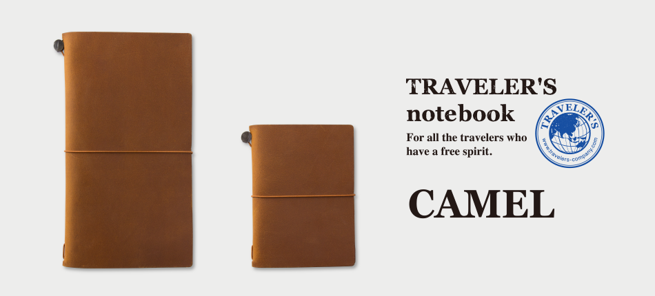

Traveler's Company is a Japanese company which sells the notebooks and other original accessories. Its signature product, traveler's notebook, has been regarded as the most fashionable way of recording the traveling experience in paper processing by those people who love traveling. All the products from traveler's company are all contributed in achieving its slogan as "For all the travelers who have a free spirit"
